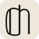

Wordmark + Monogram — three mark variants (A, B, C) vs original 02
Reference — Original 02 (unchanged)
Original 02 — as shipped

Ellipse «o», uniform 2.2px round-cap strokes, hairline separator between dom/hub, mark contains two separate letterforms with no typographic relationship to each other.
Variant A — Mark: Single «d» with open bowl + gold keystone dot
Variant B — Mark: «dh» Ligature sharing one stem

64pxVariant C — Mark: Geometric arch knockout symbol
What changed vs original 02
<ellipse> with equal rx/ry. Now a 4-segment cubic bezier path with aspect ratio 0.864 (width 19px, height 22px). Vertical sides carry the optical weight; the path geometry implies stroke modulation without requiring a variable-width stroke engine.
stroke-width="2.4". Curves, bowls, and arches use stroke-width="2.0". This is the minimum meaningful modulation achievable without a variable-width stroke engine — gives the wordmark a «designed» rather than «drawn» feel.
stroke-linecap="butt" throughout. Round caps (the original's default) read as informal — Nunito/Quicksand territory. Butt caps align with Inter, Geist, ABC Whyte — the reference point for professional tool interfaces.
Recommendation
Verdict: Mark C wins, with conditions
Mark C (geometric arch) is the strongest mark of the three for one reason: it works as a symbol, not as a legibility exercise. At 16px, marks A and B both collapse — the «d» bowl becomes indistinguishable from a circle with a line, and the «dh» ligature becomes three vertical strokes. Mark C at 16px is a recognisable arch shape with a void. It telegraphs «access», «opening», «residential gate» without needing to be parsed as letterforms.
Mark B (ligature) is structurally the most elegant and is the right call if the mark will never be used below 24px. The shared-stem concept is genuinely compelling — it earns its construction. But at favicon sizes it fails legibility completely.
Mark A (single d) is the safest bet: legible at all sizes, the open-bowl notch reads at 16px as an intentional form rather than a rendering artifact. The gold dot is the most natural use of the accent color in the system. However, a lone «d» in a square reads as a generic app icon and doesn't carry the architectural resonance of the platform.
The honest split: Use Mark C for all icon/favicon contexts (16–64px). Use Mark B as the full lockup companion mark when size allows (32px+). This is not unusual — many systems have a primary icon mark and a companion lockup mark that differ structurally.
What this wordmark still needs before production: The cubic bezier curves on the «o» and the bowl forms of «d» and «b» are hand-calculated and will have subtle asymmetries when rendered at display sizes above 48px on high-DPI screens. A type designer pass — or even a single session in Figma with the pen tool using proper on-curve/off-curve control — would tighten these. The letter spacing logic is correct. The proportions are correct. The curves themselves need one more iteration.